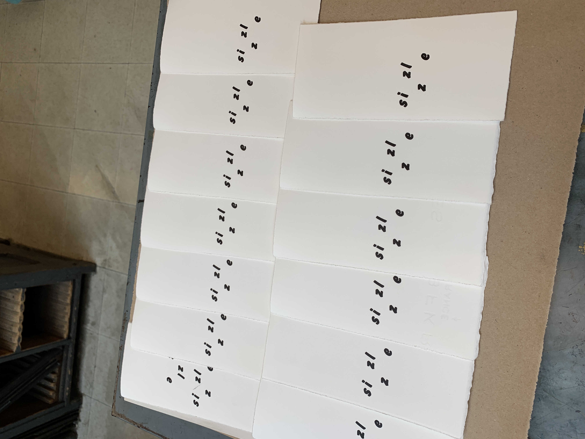
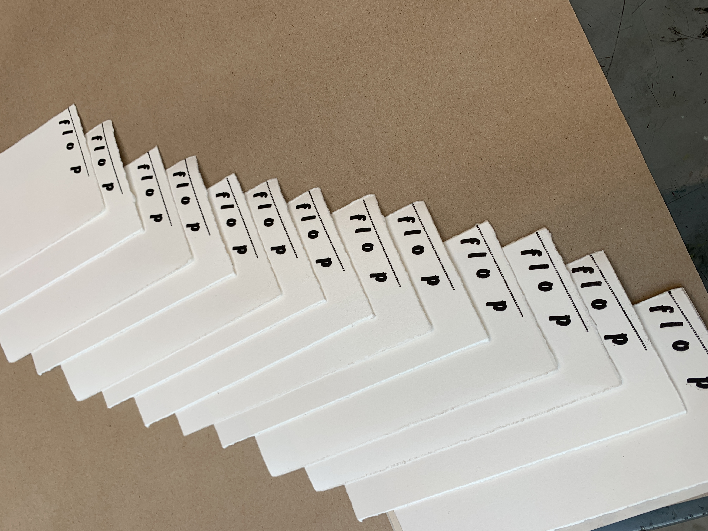
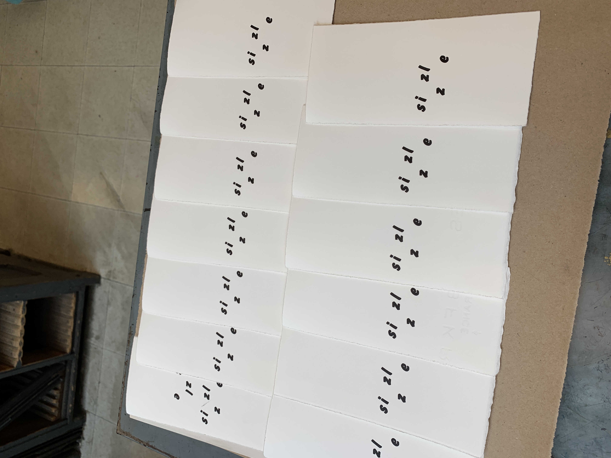
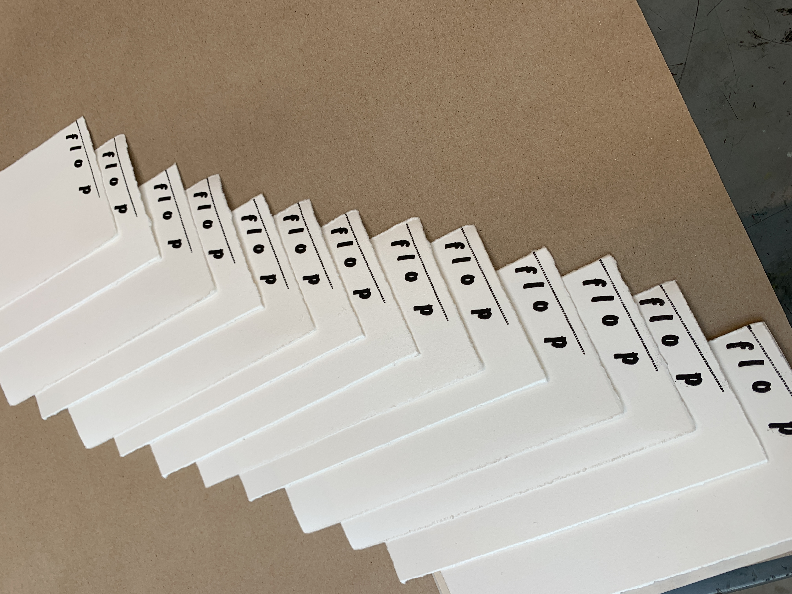
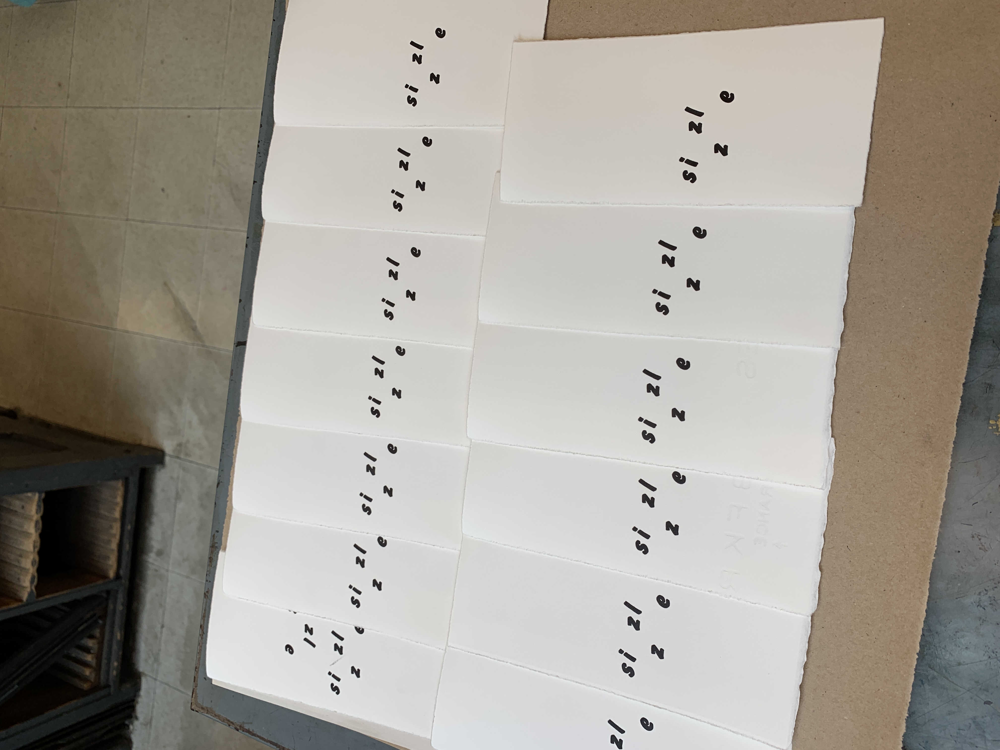
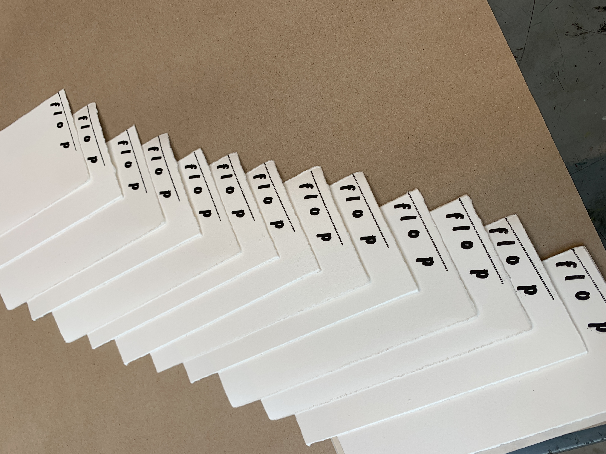

My method of setting type was experimental to me at the time. I wanted to emphasize shape and movement with some of these works.
For example, the pages for crack and sizzle were tricky, and I wanted to mimic the sound and movement of the action the word describes.
Below you can glimpse the process of mixing ink, setting type forms, inking rollers, proofing, and printing final pages.
Flip through the book: how to fry an egg

